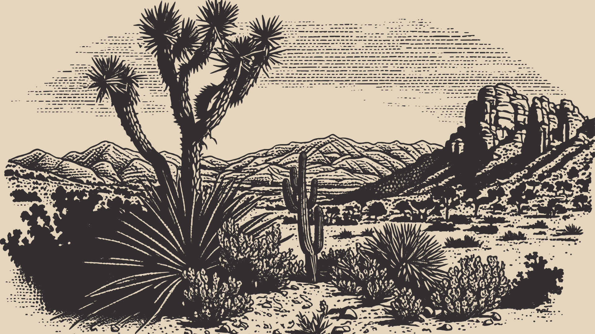

Welcome to Lucio Dominguez Landscaping

Why Landscaping is important for you
The Arizona desert can be harsh and unpredictable, but also it requires a certain sonoran desert style lawn, with its own requirements for maintaining it. Having Beautiful, Clean landscaping adds value, curb appeal, and enjoyment to your home's yard. Dealing with weeds or overgrown trees and bushes can be a hassle, we get it, so let us help you get your yard looking right again!

Notice any Difference?
Yes it's the same yard! Having your yard cleaned and maintained can make all the difference. Save your yard from looking like a desert jungle eye sore and get it looking how it should!
From clean up to maintenance, we provide the services needed for a well kept yard all year round.
